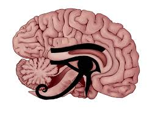

Brain Teasing Eye Questions
List of Questions
- How to decide Right or Left side on Enucleated Eye?
- Why is Cornea Transparent?
- Who invented the drug XALATAN?
- What refraction does the cornea acquire after the introduction of air into the anterior chamber?
- Where first mention of MYOPIA is found in history?
- Which medical term means "blindness to one's own blindness"?
- Which was the first published journal in Ophthalmology?
- What great ophthalmophysiologist began his career as a squadron surgeon, and ended up as the head of the world's largest department of physics?
- Where and when was the First World Congress of Ophthalmology held?
- What was the name of the shepherd, whose name was given to a specific retinal lesion?
- What does the term "HIPPUS" mean?
Answers
How to decide Right or Left side on Enucleated Eye?
The recognition of key anatomical landmarks is used to confirm a left or right globe.
- When viewing the posterior aspect of the globe with the long ciliary arteries in the horizontal plane and the superior oblique uppermost, the inferior oblique will insert to the left of the optic nerve in a left eye and to the right in a right eye
- Long ciliary arteries—this posterior blue line indicates the horizontal plane.
- The superior oblique muscle has a fine tendonous insertion into the superotemporal pole of the globe.
- The inferior oblique muscle has a thick muscular insertion into the posterotemporal side, just below the horizontal plane and below the temporal long ciliary artery.
- Cornea—this is longer horizontally than vertically.
- Optic nerve—lies closer to the nasal than the temporal limbus.
Who invented the drug XALATAN?
On the one hand, the question is very simple, and on the other, it is extremely complex. Like any scientific discovery (and the creation of a new class of drugs, the discovery of new properties of prostanoids - the ability to influence ophthalmotonus, is equated to discoveries, which is confirmed by the receipt of patents by the authors), XALATAN is a collective work of several generations of researchers.
The first reports on the effect of prostanoids on ophthalmotonus in rabbits belong to Beitch, et al. (1969), then MS Starr. (1971), Kass, MA, Posos, SM, Moses. RA, and Becker B. (1972), Camras, et al., (1977), Camras CB, Bito LZ (1981). In the first works, the researchers first discovered the hypertensive effect of prostaglandins on the eye, and only after numerous experiments with purified fractions of prostanoids, with various methods of application of drugs (injections, instillations, introduction into the cannulated eye), the ophthalmic-hypotensive effect of prostaglandins of the F 2 alpha subclass was established. The existence of the uveoscleral outflow tract was first discovered by Bill A. in 1975, without regard to prostaglandins and their effect on ophthalmotonus. C5 alkyl-substituted lipid-soluble methyl, ethyl, isopropyl or isobutyl (C1, C5-substituted) esters of prostaglandin F2 alpha in the form of soluble tromethamine salts in sterile anhydrous solution of peanut oil, in a form convenient for use in ophthalmology. The prostaglandin content in the proposed eye drops ranged from 0.01% to 1% prostaglandin. (C1, C5 are the numbers of carbon atoms substituted by alkyl groups in the prostaglandin molecule). According to the chemical formula latanoprost - (+) - isopropyl-Z-7 - {(1R, 2R, 3R, 5S) -3, 5-dihydroxy-2 - [(3R) -3-hydroxy-5-phenylpentyl] cyclopentyl} - 5-heptenoate. After that, a number of publications devoted to the study of the problem appeared, in particular, many works by Hedman K, Alm A., Linden C, Widengard I, Camras CB, Watson PG, Stjernschantz J., B. Resul and other researchers. Moreover, until the mid-nineties (more precisely, until 1994) latanoprost figured under the "name" of the substance PhXA41. For the first time to release a commercial preparation of latanoprost under the name "Xalatan" was proposed in January 1996 by Karl Brown - Sales Director of Pharmacia & Upjohn, USA. (Pharmacia & Upjohn was formed in November 1995 through the merger of Pharmacia Aktiebolag and The Upjohn Company. On April 3, 2000, through the merger of Pharmacia & Upjohn and Monsanto / Searl, the new Pharmacia Corporation was formed. which currently makes the commercial drug Xalatan). And since December 1995, the Federal Drug Administration of the United States of America has approved long-term trials of a commercial drug latanoprost with the market name Xalatan. After six months of large-scale trials of Xalatan, the FDA has authorized Pharmacy and Upjohn to sell the commercial drug Xalatan. Therefore, the inventor of latanoprost, the active principle of the drug XALATAN (phenyl substituted analogue of PGF2a), is Laszlo Z. Bito, and the author of the commercial drug (or rather the project) XALATAN (trademark of latanoprost from Pharmacia Corporation) is Karl Braun (from Pharmacia Corporation).
What refraction does the cornea acquire after the introduction of air into the anterior chamber?
Refraction of the cornea (refraction) when the anterior chamber is completely filled with air will be equal to "-4.9 Diopters", while normally it is about +43 Diopters.
Solution: The cornea is essentially a lens with two refractive surfaces - anterior and posterior. Remembering the school physics course, you can calculate the refraction (refractive power) of any lens by the formula:
D = D1 + D2 - SxD1xD2
where D is the refractive power of the lens (refraction)
D1 is the refraction of the front refractive surface of the lens, calculated by the formula: n2-n1 / r, where: n2 is the refractive index of the second medium, n1 is the refractive index of the first medium , and r is the radius of the front curvature in meters
D2 is the refraction of the rear refractive surface of the lens, calculated by the formula: n2-n1 / r, where: n2 is the refractive index of the second medium, n1 is the refractive index of the first medium, and r is the radius of the rear curvature in meters.
S is the coefficient calculated by the formula d / n, where: d is the thickness of the lens in meters, n is the refractive index of the lens.
For the human cornea, the above values are:
- corneal refractive index - 1.376
- air refractive index - 1.0
- the refractive index of aqueous humor - 1.336 (we do not need)
- radius of the anterior curvature of the cornea - 0.0077 meters (7.7 mm)
- radius of the posterior curvature of the cornea - 0.0068 meters (6.8 mm)
- thickness of the cornea is taken as 0.0008 meters (0.8mm)
Substituting these values into the formula, you can see that the refraction of the anterior surface of the cornea will not change and will be equal to 48.83 Diopters, but the refraction of the posterior surface will be equal to -55.29 Diopters instead of the normal -5.88 Diopters !!! Adding these two values, we get -6.46 Diopters. (48.83 + (- 55.29) = -6.46Dptr)
The S coefficient will be equal to 0.00058, and SxD1xD2 = -1.56Dptr.
Thus:
48.83 + (- 55.29) - (-1.56) = (-6.46) - (-1.56) = -4.9 Dptr.
Where first mention of MYOPIA is found in history?
The first mention of myopia is found in Aristotle (384-322 BC). He noted that with the weakness of the squinting eye, what they want to see is brought close to him. Aristotle first encountered the word "myop", meaning: close your eyes blinking, from which the modern term "myopia" originated. But we also like this answer: The term myopia (myopia) was first used in the works of Aristotle (330 BC). BC), however, Aristotle himself could not explain why myopes clearly distinguish objects only close. The term comes from the Greek words myo-squint and ops-vision. Galen explained the presence of myopia by an insufficient hit of light rays into the eye, if there are few rays, then a person sees well only close (131-201), but he sees poorly in the distance. Magnus (Magnus, 1193-1280) first tried to explain the cause of myopia by the posterior displacement of the lens! Plater (1535-1614) adhered to the same version. For the first time, it is believed that correct theoretical considerations regarding the refraction of rays in the eye were expressed in the 15th century by Leonardo da Vinci. The real story of refractive errors begins with the works of the astronomer Kepler (1611), who gave the correct understanding of the visual act and created the doctrine of the eye diopter. In the writings of the ancient Greeks and Arabs, people were mentioned who poorly see into the distance, but can slightly improve their vision by squinting. Myopia is also known as "brachymetropia", which is explained by the fact that nearsighted people can see an object well only by bringing it closer to their eyes. 1535-1614). For the first time, it is believed that correct theoretical considerations regarding the refraction of rays in the eye were expressed in the 15th century by Leonardo da Vinci. The real story of refractive errors begins with the works of the astronomer Kepler (1611), who gave the correct understanding of the visual act and created the doctrine of the eye diopter. In the writings of the ancient Greeks and Arabs, people were mentioned who poorly see into the distance, but can slightly improve their vision by squinting. Myopia is also known as "brachymetropia", which is explained by the fact that nearsighted people can see an object well only by bringing it closer to their eyes. 1535-1614). For the first time, it is believed that correct theoretical considerations regarding the refraction of rays in the eye were expressed in the 15th century by Leonardo da Vinci. The real story of refractive errors begins with the works of the astronomer Kepler (1611), who gave the correct understanding of the visual act and created the doctrine of the eye diopter. In the writings of the ancient Greeks and Arabs, people were mentioned who poorly see into the distance, but can slightly improve their vision by squinting. Myopia is also known as "brachymetropia", which is explained by the fact that nearsighted people can see an object well only by bringing it closer to their eyes. The real story of refractive errors begins with the works of the astronomer Kepler (1611), who gave the correct understanding of the visual act and created the doctrine of the eye diopter. In the writings of the ancient Greeks and Arabs, people were mentioned who poorly see into the distance, but can slightly improve their vision by squinting. Myopia is also known as "brachymetropia", which is explained by the fact that nearsighted people can see an object well only by bringing it closer to their eyes. The real story of refractive errors begins with the works of the astronomer Kepler (1611), who gave the correct understanding of the visual act and created the doctrine of the eye diopter. In the writings of the ancient Greeks and Arabs, people were mentioned who poorly see into the distance, but can slightly improve their vision by squinting. Myopia is also known as "brachymetropia", which is explained by the fact that nearsighted people can see an object well only by bringing it closer to their eyes.
Which medical term means "blindness to one's own blindness"?
Anosognosia. Anton-Redlich hallucinatory syndrome of denial of blindness.
Which was the first published journal in Ophthalmology?
The first attempts to publish journal in ophthalmology were made in Germany at the very beginning of the 19th century by the Vienna prof. J. Ad. Schmidt and Göttingen prof. K. Himly published in 1803 (?). The journal or magazine name was "Ophtalmologische Bibliothek". This was the FIRST OPHTHALMOLOGICAL JOURNAL in the WORLD!
Ref: Arch Ophthalmol. 1962;67(4):399-405. doi:10.1001/archopht.1962.00960020401004
What great ophthalmophysiologist began his career as a squadron surgeon, and ended up as the head of the world's largest department of physics?
Helmholtz, Hermann Ludwig Ferdinand von Helmholtz (1821-1894).
German scientist, one of the greatest natural scientists, foreign corresponding member of the Petersburg Academy of Sciences (1868). Author of fundamental works in physics, biophysics, physiology, psychology. For the first time (1847) he mathematically substantiated the law of conservation of energy, showing its universal nature. He developed the thermodynamic theory of chemical processes, introduced the concepts of free and bound energies. He laid the foundations for theories of vortex motion of liquid and anomalous dispersion. Author of fundamental works on the physiology of hearing and vision. He discovered and measured heat generation in muscles, studied the process of muscle contraction, and measured the speed of propagation of a nerve impulse. Supporter of physiological idealism. Born in Potsdam on August 19, 1821. At the request of his father in 1838. entered the Friedrich Wilhelm Military Medical Institute (Medical Surgical Institute) in Berlin to study medicine. Under the influence of the famous physiologist Johann Müller, Helmholtz devoted himself to the study of physiology, and after graduating from the institute, he made his first discovery - he established that the nerve cell and nerve processes form one whole - a neuron, having defended his doctoral dissertation “De fabrica systematis nervosi evertebumrator ”.
In the same year Helmholtz was appointed as an intern at the Charite hospital in Berlin, and in 1843 as a military doctor in Potsdam. Continuously engaged in physiological research, he does not leave the questions of mechanics and physics, which he was interested in since childhood, and in 1847 in Germany publishes a small book that has become a classic - "Ueber die Erhaltung der Krafl" ("On the conservation of strength"). Here for the first time the law of conservation of energy was precisely formulated and developed, which now forms the basis of all modern natural science. The author of the book, the surgeon of the hussar squadron, is only 26 years old. However, those who knew Helmholtz well were not surprised by the publication of his book.
Soon the doctor parted with the hussars and military service and devoted himself entirely to science.
In 1848, Helmholtz was appointed professor of anatomy at the Academy of Arts in Berlin, in the place of the famous Brücke, and in 1850, professor of physiology and general pathology at the University of Königsberg. Here Helmholtz carried out most of his research on the physiology of the senses, which he then continued in Bonn and in Heidelberg, where he read physiology from 1858 to 1871. Having acquired at the same time great fame for his work in physics, Helmholtz was called in 1871 to replace Magnus in the physics department in Berlin, where he remained until 1888, heading the new physics institute founded in 1874. In 1883, Emperor Wilhelm bestowed the dignity of nobility on Helmholtz, and in 1888 Helmholtz was appointed director of the newly established Government Institute of Physics and Technology (Physikalisch Technische Reichsanstalt) in Charlottenburg, while continuing to lecture on theoretical physics at the university. In 1891, scientists from all over the world celebrated the 70th anniversary of Helmholtz. Helmholtz's son, Robert Helmholtz, a promising young physicist, died untimely in 1889, leaving work on the emission of burning gases.
During his lifetime, Helmholtz began to be called “great”. Indeed, Hermann Helmholtz, being one of the greatest scientists of the 19th century, possessing a deeply philosophical mind, an extraordinary ability for inductive thinking, great knowledge in mathematical analysis and experimental art, always brought something new and original into all areas of the science of nature that he touched - in physiology, anatomy, physics, chemistry, mechanics, meteorology, even psychology and mathematics. In each of these sciences, he made brilliant discoveries that brought him worldwide fame.
His first work relates to physiological chemistry - to the question of "decay and fermentation" (1843); in it, Helmholtz tries to elucidate the role of microorganisms in these processes.
Further studies (1845-1847) on the metabolism and heat excitation in the muscles during their activity lead Helmholtz to think about the general laws connecting the transformations of energy in the inorganic and organic world - the thoughts set forth in his classic work Die Erhaltung der Kraft ( 1847). The law of conservation of energy, however, only for thermal processes, was one of the first established by the German physician R. Mayer. But Helmholtz knew nothing of Mayer's work; he heard this name only after the publication of his work. Now this law bears the name of both scientists (Mayer-Helmholtz law).
In 1850, Helmholtz proved, contrary to the opinion of the famous I. Müller, that the speed of transmission of nerve stimuli is measurable and measured it. He studied the speed of propagation of excitation along the nerve on dissected frogs. He irritated at two points the nerve, which goes to the muscle, with an electric current; the induced excitement ran along the nerve, reached the muscle, and it contracted. Knowing the distance between these two points and the time difference, it was possible to calculate the speed of propagation of excitation along the nerve. It turned out to be quite small - only 27 m / s. The experience looks simple. However, through it, Helmholtz made a major discovery. Before him, it was argued that this speed cannot be measured: it is immeasurably great and is due to the mysterious "life force". Helmholtz made measurements not only of the frog.
This year began a period of very fruitful activity of Helmholtz in the field of the physiology of the senses. The eye is one of the wonderful organs in our body. They knew about his work before, they compared it with the work of a photographic apparatus. But for a complete clarification of even only the physical side of vision, a simple comparison with a camera is not enough. It is necessary to solve a number of complex problems from the field of not only physics, but also physiology and psychology. They had to be resolved on a living eye, and Helmholtz was able to do this, invented in 1851 an eye mirror (ophthalmoscope, German augenspiegel) for examining the bottom of a living eye. The eye doctor had the opportunity to see the inner membranes of the eye and gain new knowledge. In fact, it was after this that ophthalmology emerged as an independent specialty. Before the invention of the ophthalmoscope “it was too often, as for a patient, and for a doctor, it is equally dark before the eyes ”(cited by SS Golovin), therefore, in most cases, when the cause of an eye disease was not clear, a diagnosis was made of either amblyopia (low vision) or amaurosis (blindness). Fundus ophthalmoscopy opened a new area - diseases of the posterior segment of the eye. Now this device has long become a must-have tool for every eye doctor. The eye mirror has revealed many secrets of the eye. It turned out that the blind spot on the retina is the place where the optic nerve leaves it: the nerve transmits excitement, but it does not "see" itself. Fundus ophthalmoscopy opened a new area - diseases of the posterior segment of the eye. Now this device has long become a must-have tool for every eye doctor. The eye mirror has revealed many secrets of the eye. It turned out that the blind spot on the retina is the place where the optic nerve leaves it: the nerve transmits excitement, but it does not "see" itself. Fundus ophthalmoscopy opened a new area - diseases of the posterior segment of the eye. Now this device has long become a must-have tool for every eye doctor. The eye mirror has revealed many secrets of the eye. It turned out that the blind spot on the retina is the place where the optic nerve leaves it: the nerve transmits excitement, but it does not "see" itself.
In the same year, he invented an ophthalmometer - a special device, amazing in its simplicity, which made it possible to measure the curvature of the cornea, back and front surfaces of the lens. This is how the refraction of rays in the eye - the optics of the eye - was studied, and in 1853 it was possible to solve an important question about the mechanism of accommodation (adaptation) of the eye.
We see objects painted in one color or another, our vision is color. What is its basis? The study of the eye showed that the retina has three main light-sensing elements: one of them is most irritated by red rays, the other by green rays, and the third by blue. Any color causes stronger irritation to one of the elements and weaker irritation to the rest. Thus, the red color causes strong irritation of the “red” elements, weak irritation of the “green” elements and very weak irritation of the “violet” elements; blue color - strong irritation of "violet", weak - "green", very weak - "red" elements. Combinations of irritations create all this play of colors that we see around us. In 1855, based on the forgotten idea of Thomas Jung, Helmholtz develops the now generally accepted theory of the perception of color impressions by the eye, known as the Jung-Helmholtz theory, and in an interesting psychological study, he clarifies the connection between nervous perceptions and the impressions they excite in us. Already in Heidelberg, Helmholtz collected all his work on physiological optics and published them in a coherent form in the work "Handbuch der Physiologischen Optik" (1859-1866), thereby creating physiological optics - the science of the eye and vision.
He did no less for the study of hearing and ear. Helmholtz began to study the actions that sounds have on objects capable of vibrating. Having created a resonant theory, he then developed on its basis the doctrine of auditory sensations, of our voice, of musical instruments.
The resonance principle is as follows. Each oscillating body has its own period (range) of oscillations. It responds most strongly to those fluctuations in the environment that have a period similar to it. Our perception of sounds is also built on resonance.
The inner ear contains the so-called organ of Corti. It consists of many fibers stretched like strings. These fibers are not the same: they have different periods of vibration. External sounds make one or another fiber of Corti's organ vibrate. These vibrations are perceived by the endings of the auditory nerve, causing the corresponding excitations, which reach the "auditory" center of the brain. The stronger the sound, the stronger the vibrations of the fibers of Corti's organ, the stronger the excitation of the nerve, the more brain cells will be irritated. And the strength of sound we perceive depends on the number of brain cells irritated during the auditory process. Studying the phenomena of vibrations, Helmholtz also developed a number of questions that are important for the theory of music.
In Heidelberg, Helmholtz also began to study questions of acoustics, physiology of the organ of hearing and speech, and the physical side of music; understands the essence of the mechanism of sound perception and its various manifestations - harmony, dissonance, difference in timbres and combination tones, and indicates the outstanding role that harmonic sounds play in these phenomena and in speech phenomena. Having built a series of resonators invented by him, Helmholtz studies the phenomena of speech, and in 1860 he manages to synthetically reproduce the pronunciation of vowels, at the same time he solves complex mathematical questions about the mechanism of air vibrations, and gives interesting studies on the psychophysics of feelings. These works by Helmholtz are collected in his work: “Die Lebre von den Tonempfindungen” (1862).
Helmholtz was a scientist distinguished by an exceptional breadth of outlook, wealth and diversity of knowledge and interests. He walked not only in step with his time, but also ahead of him. Studying the eye and vision, Helmholtz worked as a physicist, and as a physiologist, and as a psychologist. Studying the ear and hearing, the scientist - not a musician (!) - created the foundations of musical harmony, developed the physical and physiological theory of the perception of musical sounds.
Since moving to Berlin in 1871, Helmholtz devotes himself exclusively to physics, and studies its most complex areas: electrodynamics, in which, based on the ideas of Faraday, he develops his own theory, then hydrodynamics and electrolysis phenomena in connection with thermochemistry. Particularly remarkable are the works on hydrodynamics, begun by him as early as 1858, in which Helmholtz gives the theory of vortex motions and fluid flow and in which he succeeds in solving several very difficult mathematical problems. In the theory of electrolysis, Helmholtz generalized Faraday's law, gave a theory of convection currents and explained the complex phenomena that occur in a water voltameter; Guided by these studies on the general laws of the thermodynamics of chemical processes, Helmholtz in 1882 gives a remarkable theory of free energy, in which he resolves the question of how much of the total molecular energy of any system can be converted into work. This theory has the same significance in thermochemistry as Carnot's principle in thermodynamics. In 1884, Helmholtz published the theory of anomalous dispersion, based on the assumption of the interaction of material particles and particles of the ether, and a little later several important works on theoretical mechanics. Work on meteorology dates back to the same time. As early as 1875, Helmholtz applied his research on currents and vortices to the study of atmospheric movements; he returned to them in 1888, and in one work (1888) gave the theory of winds, in another "On the energy of wind and waves" (1890), explained the mechanism of wave formation when the wind passes over the water surface; the most recent work of Helmholtz (1891-1892) relates to theoretical mechanics.
Helmholtz's educational activity is no less scholarly. Under his direct supervision, in his laboratories in Bonn, Heidelberg and Berlin, or under the influence of his work, the modern generation of physicists and physiologists grew up. He had many students. Many young scientists came to work in his laboratory, to learn the art of experiment. Among Russian scientists, physiologists E. Adamyuk, N. Bakst, F. Zavarykin, I. M. Sechenov and others, from physicists P. Zilov, R. Colley, A. Sokolov, N. Schiller, P. N Lebedev, etc. In general, Helmholtz's activity as a scientist and teacher gave a real direction to modern physiology and physics and also strongly influenced the development of these sciences everywhere, especially in Russia. The importance and scientific merits of Helmholtz were especially clearly expressed in that unanimity and triumph.
Subsequently, one of the Moscow hospitals, known as the Helmholtz Institute or the Helmholtz Research Institute of Eye Diseases, is named after Helmholtz.
Where and when was the First World Congress of Ophthalmology held?
1st International Congress of Ophthalmology was held at Brussels in 1857
What was the name of the shepherd, whose name was given to a specific retinal lesion?
It is specific lesion of the retina in syphilis, the name of which comes from the name of a shepherd named Syphilus.
Syphilis (syphilis), synonyms: lues, lues venerea is a chronic infectious venereal disease caused by treponema pale, affecting all organs and tissues of a person, characterized by a progressive course. There are congenital and acquired syphilis.
The term "syphilis" first appeared in the poem "On syphilis, or the Gallic disease" by the outstanding Italian scientist, physician, poet and astronomer Girolamo Fracastoro (1478-1553), created in 1530 in Verona. By the name of the shepherd Syphilus described in the poem, who was punished by the gods with a disease of the genitals for the insolent reproaches that he threw at them. The disease was named "syphilis". According to another version, the name comes from the son of Niobe Syphilus mentioned by Ovid.
Until that time, as Fracastoro notes, syphilis had been called the "French disease" (Italian: mal francese) in Italy, Malta,[28] Poland and Germany, and the "Italian disease" in France. In addition, the Dutch called it the "Spanish disease", the Russians called it the "Polish disease", and the Turks called it the "Christian disease" or "Frank (Western European) disease" (frengi). These "national" names were generally reflective of contemporary political spite between nations and frequently served as a sort of propaganda; the Protestant Dutch, for example, fought and eventually won a war of independence against their Spanish Habsburg rulers who were Catholic, so referring to Syphilis as the "Spanish" disease reinforced a politically useful perception that the Spanish were immoral or unworthy. However, the attributions are also suggestive of possible routes of the spread of the infection, at least as perceived by "recipient" populations. The inherent xenophobia of the terms also stemmed from the disease's particular epidemiology, often being spread by foreign sailors and soldiers during their frequent sexual contact with local prostitutes.
What does the term "HIPPUS" mean?
Hippus is from in Greek term "Hippeio" meaning "to jump".
It is abnormal paroxysmal rhythmic contractions and dilations of pupils, varying in amplitude and frequency, occurring regardless of the light entering the eyes; clonic spasm of m.sphincter iridis, leading to frequent changes in miosis and mydriasis.
Hippus Mechanism
Constriction pathway
- Subcortical
- Connects retina to the iris sphincter muscle
- Iris sphincter muscle is innervated by the parasympathetic nervous system
- Path: Light → Nerve Impulses from optic nerve → optic chiasm → Pretectal Nucleus → Edinger- Westphal Nucleus → Oculomotor Nerve (III) → Ciliary Ganglion → Iris Sphincter Muscle → Constriction
Dilation pathway:
- Subcortical
- Connects locus coeruleus and hypothalamus to the iris dilator muscle
- Iris dilator muscle is innervated by the sympathetic nervous system
- Path: Locus Coeruleus + Hypothalamus → intermedio-lateral column of spinal cord → Superior Cervical Ganglion → Iris Dilator Muscle
Interaction between Constriction and Dilation Pathway
Exclusivity:
- Locus Coeruleus during aroused state inhibits constriction by inhibiting the Edinger-Westphal Nucleus
Pupil Light Response
- Light first activates the constriction pathway
- Also induces wakefulness in the suprachiasmatic nucleus, which then activates the dilation pathway
Pathologic Hippus: Predictor of early mortality
Abnormal manifestation of Hippus
- Rapid oscillations between constriction and dilation
- Slowed oscillations between constriction and dilation
- Amplitude
Typically a symptom of another illness
- Altered mental state: Rapid oscillations in some epileptic seizures
- Myasthenia Gravis: Slowed oscillations
- Multiple Sclerosis: Decreased wakefulness → slowed oscillations
- Cirrhosis
- Aconite Poisoning
Experiencing symptoms like these? Learn about our Eye Department or book a consultation with Dr. Dhaval Patel.
Among Top 30 Ophthalmology Blog